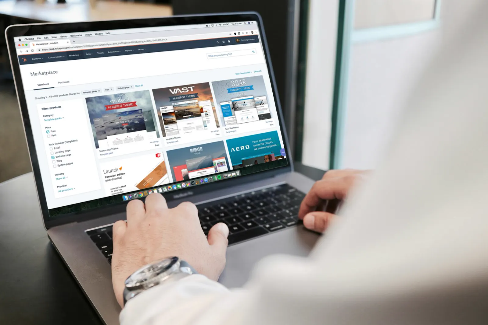

Website redesigns
Make an existing site clearer, faster to use and easier to maintain.
From a landing page to a full app, we plan how people move through your product and design every screen to make that journey simple.

Good UI/UX design makes a product feel obvious. People find what they need, understand what to do next and get there without thinking about the design.
We design for startups, e-commerce brands and established teams, and we can work alongside your developers or hand over to ours.
For founders, product teams and brands that are launching or redesigning a website or app and want a clear, usable interface.
Make an existing site clearer, faster to use and easier to maintain.
Focused pages that explain one offer and make the next step obvious.
Interfaces that feel natural on a phone, from first launch to daily use.
Dense information organized so people can act on it quickly.
We learn your users, goals and what the product has to do.
We sketch the flows and layouts before any visual design.
We build the interface, components and visual style.
A clickable prototype to test, then organized files for development.
Two product design projects, each with the problem, the thinking and the result. Pick one to jump straight to it.
Search on Pluckk wasn't broken. It just wasn't doing enough. Users landed on a blank bar, typed into the void, and got a flat list back, with no guidance, no way to refine and no reason to stay.
The revamp rebuilt search from the intent up: a smarter empty state that turns the open-search moment into discovery, autocomplete that teaches users what to look for, variety chips that show product breadth without a second search, sort and filter tools for buyers who know what they want, and a persistent cart bar that keeps checkout one tap away. The lesson: search isn't a utility. It's the highest-intent surface in the app.
Redesigning an FMCG stock allocation and appointment automation system to simplify warehouse operations, reduce manual dependency, and enable faster, more reliable allocation decisions through real-time operational visibility and intelligent workflow automation.
As the warehouse grew, teams updated the system after finishing physical tasks instead of in real time, and FMCG stock allocation became the most manual and error-prone workflow of all. The redesign turned that daily judgment into a clear suggestion engine, with visible pending, suggested and booked states, configurable relaxation rules and a one-click confirmation for the Ops team.
UX is how a product works and flows for the user. UI is how it looks: the layout, type, colour and components. We handle both together.
Yes. We design responsive websites and mobile apps, so the experience works across screen sizes.
Yes. We build interactive prototypes in Figma so you can test the flow before development starts.
Yes. We deliver organized files with components and spacing documented, so developers can build accurately.

We build Shopify stores that look premium and are structured to sell — from theme and catalogue to SEO, tracking and ads that drive return on ad spend from day one.

We build brand identities that look sharp, feel consistent and make your business easy to recognise and remember — on screen, in print and on social.

We turn complex ideas into clear, memorable motion — explainer animations, 3D motion graphics and social video that keep people watching.

We plan, design and publish your social media content, so your brand stays active, consistent and easy to recognise on every platform.